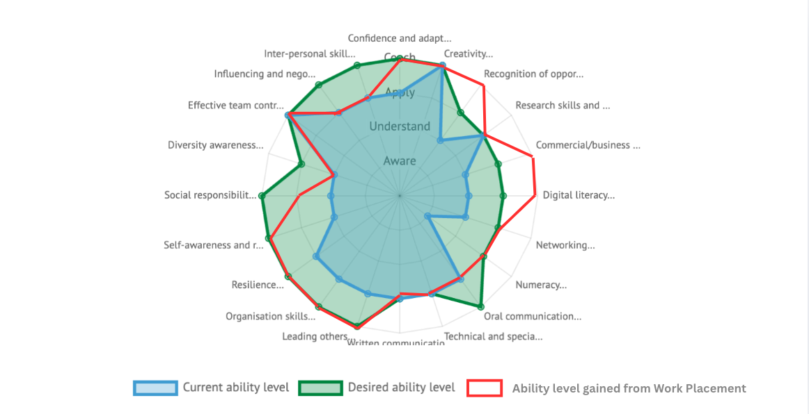

Career Attributes
As an assessment of my Career Attributes, I will focus on four skills I believe I developed the most in my summer work placement with the Burning Man Project: digital literacy, organisation skills, self-awareness and reflection, and commercial awareness. These are not exhaustive, but I’ve written at length within my Reflexive Report as to my growing confidence and decision making skills. I received a lot of experience navigating team-based collaboration and social skills such as empathy, but as they are soft skills always growing.
I will never stop developing these skills. Figure 1 acts as a representative graphic as to where I was before, hoping to be, and after my placement. Some skills, such as interpersonal and negotiation skills I did not develop as much as I thought I would, though, this may be due to their inherently subjective nature and my expanding personal metrics. Other skills, such as commercial awareness developed far beyond what I expected when I made my predictions in May.

In the years after my graduation, as I continue to develop these skills, I’m sure I’ll start to see them much more like a sphere circling around, then a flat progression.
Digital Literacy
The Heavy Equipment Department had roughly 20 operational machines at any given point. For both insurance and safety reasons, one of my main duties was to track and input inspection reports into a master-database. I optimized it through implementation of a drop-down menu for operators, and designed it to alert me when a machine had gone too long without an inspection. When operators reported serious mechanical failures, the machines would be ‘tagged out’ and removed from service.
The head mechanic and I discussed strategies to integrate my database tracking into the app he used to log maintenance, but we decided it would be best to start fresh next season. Ultimately, I got much better with the practical implementation of rudimentary coding, and data collection and analysis. Also, I learned to use a pager.
Organisation Skills
In the planning and management of a project, I learned that asynchronous collaboration was best structured through fixed objectives and a transparent process. I learned so much through watching the department leadership hold meetings and set goals. There was none of the faffing I’ve been critical of in most office jobs, due to the high level of trust, it was mostly implementation.
I took a leadership role in the planning of an organization-wide teambuilding event that we were hosting. Using the system my managers had developed as a model, I set a timeline with key deadlines alongside it. This allowed team-members to chip in when they had spare time and made progress clear to everyone without confusion.
Self-Awareness and Reflection
Knowing that I was writing weekly journals alongside my placement allowed me to devote time to analyzing decisions in a way I hadn’t done before. My method of asking for assessment mostly consisted of informal conversations where I would work through choices with people I admired and receive their feedback.
Through the act of journaling, I saw patterns of procrastination within myself that I was able to target the following week. It almost gave me the tool to reflect out and see how I was portraying myself to others. I’d like to carry on with this habit throughout my working life, as it not only helps me reflect, but also to keep track of time as it passes and connections.
Commercial Awareness
Although Burning Man is not a conventional commercial organization, my placement developed my business awareness by demonstrating how administrative and physical infrastructure underpin an organization's ability to deliver its central mission. As an administrator, I served as the organizational infrastructure that allowed my department to function smoothly. My department itself existed to support the rest of the organization and the artists.
We almost exclusively served internal clients in a resource constrained environment. I began to see operations within their greater organizational system, and having an impact on the operations of other departments.
Conclusion
I see these competencies as extremely transferable, especially within operational environments. They have also encouraged me to consider opportunities outside my previously anticipated career fields, including logistics and supply-chain administration. More broadly, developing reflective practice has helped me become less prescriptive about my professional identity. Rather than measuring my development exclusively against the requirements of a predetermined career, I am able to identify my strengths, weaknesses and interests as they emerge through different experiences.